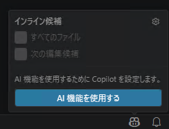
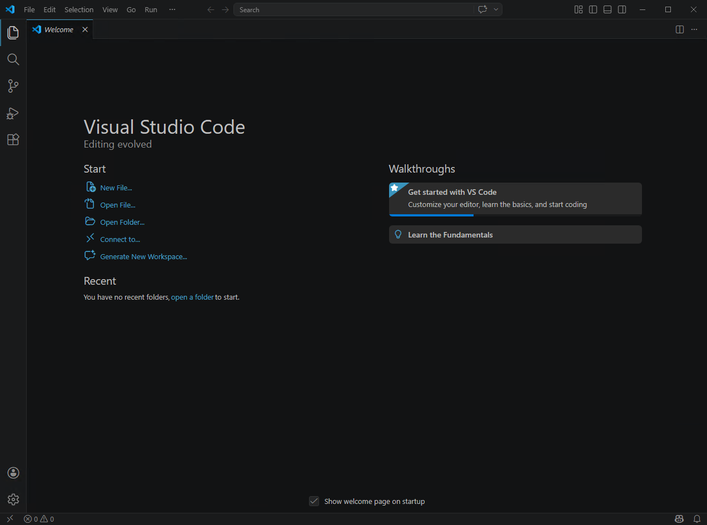
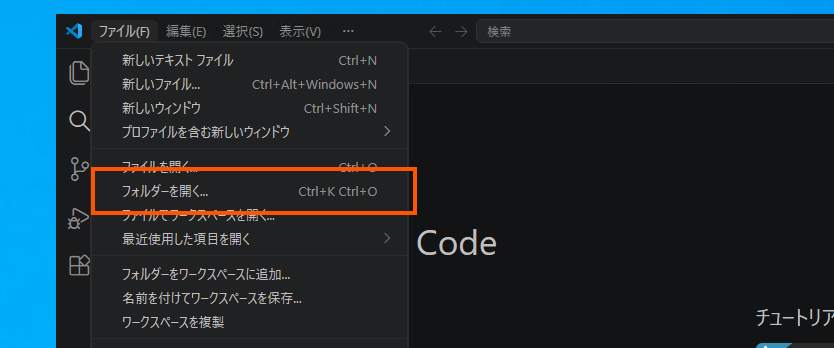
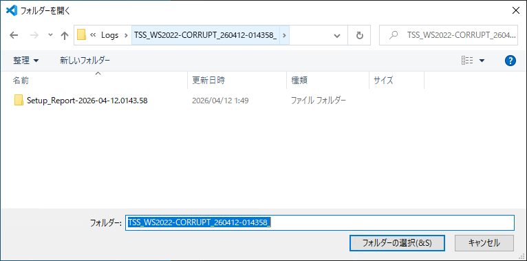
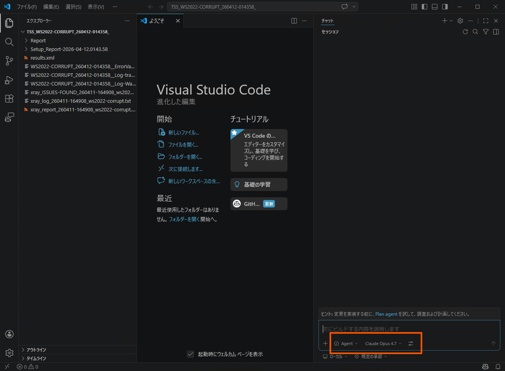
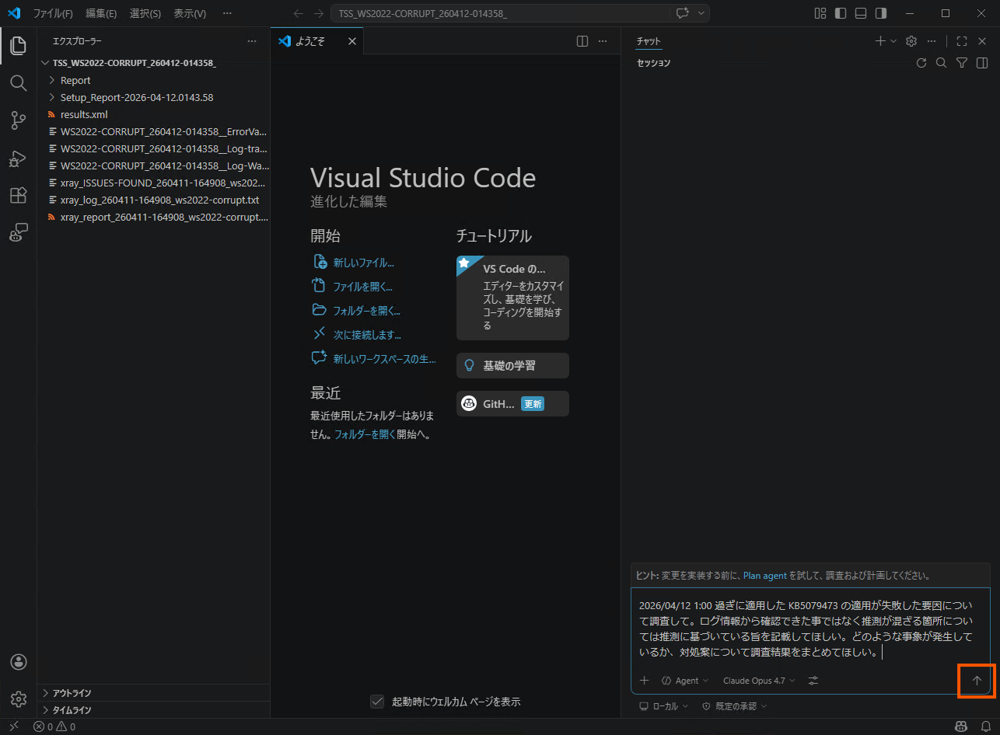
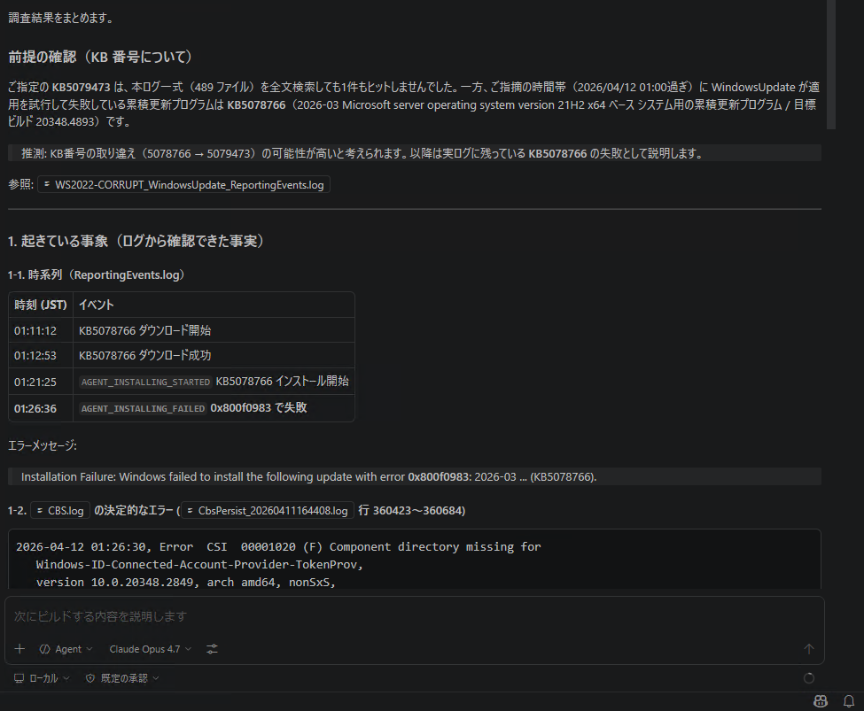
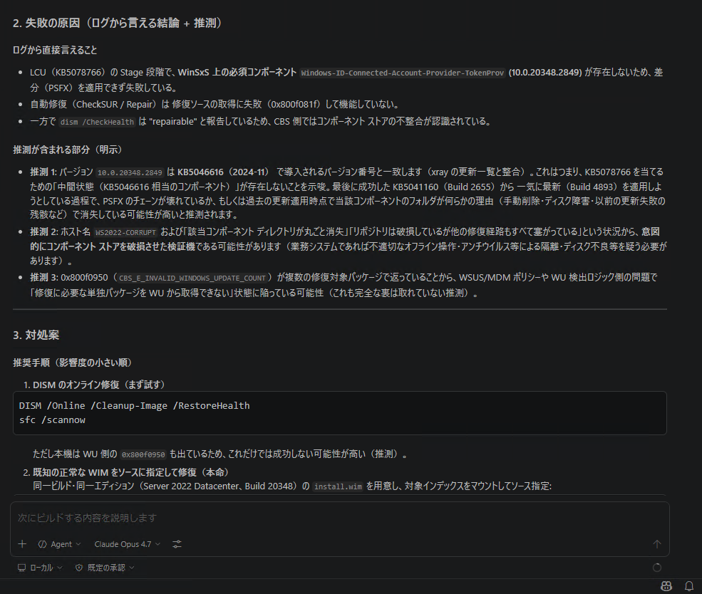
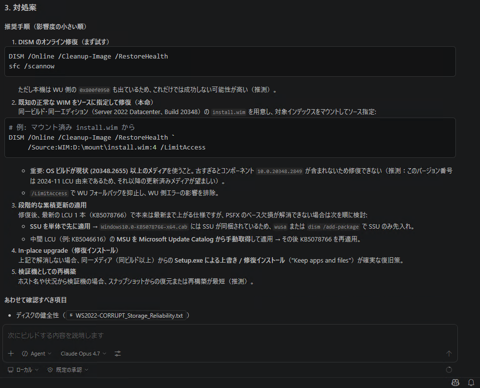

※ 本記事はマイクロソフト社員によって公開されております。
こんにちは。
Windows プラットフォーム サポート担当の吉田です。
今回は Windows Update などで更新プログラムの適用に失敗する事象を、GitHub Copilot を活用して調査する手法をご紹介します。
皆様、GitHub Copilot は利用されたことはありますでしょうか？
私は少なくとも調査に使い始めるまでは GitHub Copilot を利用したことがありませんでした。
GitHub Copilot はプログラミングを支援する AI ツールで「コードを自動生成してくれるツール」というイメージをお持ちの方が多いかと思います。
しかし、これからご紹介する手法を用いることでトラブルシューティングの手助けとなりますので、ぜひ本記事を参考にお試しいただければ幸いです。
GitHub Copilot とは
GitHub Copilot は GitHub が提供する AI コーディング アシスタントです。
コードの自動補完や生成が主な機能として知られていますが、VS Code 上のチャット機能 (Copilot Chat) では、自然言語で質問や指示を送ることで、開いているファイルやフォルダーの内容を読み取り、その内容に基づいた回答を得ることができます。
この「ファイルを読み取って自然言語で要約・分析する」能力は、プログラムのコードに限らずログ ファイルの解析にも応用できます。
更新プログラムの適用時に記録されるログは構造化されたテキストであり、Copilot にとってはコードと同様に解釈可能な対象です。
大量のログから関連するエラーや時系列を抽出し、原因と考えられる要因や対処案を提示させることで、効率的に調査を進められます。
GitHub Copilot についての情報は以下の公式サイトをご確認ください。
GitHub Copilot · あなたの AI ペア プログラマー · GitHub
https://github.com/features/copilot
GitHub Copilot を利用して、更新プログラムの適用に失敗する状況の調査を実施する
■ 事前に準備するもの
- GitHub のアカウント
- Visual Studio Code (以下 VS Code)
■ 事前準備
本記事は調査手法の解説をメインとするため、事前準備は概要のみ記載します。
以下のサイトにアクセスして GitHub のアカウントを作成します
GitHub · Change is constant. GitHub keeps you ahead. · GitHub
https://github.com/Visual Studio Code をインストールします
Download Visual Studio Code - Mac, Linux, Windows
https://code.visualstudio.com/download
Visual Studio Code の拡張機能にて日本語化パックをインストールします ※既にインストール済みや不要の場合はスキップしてください
Japanese Language Pack for Visual Studio Code
https://marketplace.visualstudio.com/items?itemName=MS-CEINTL.vscode-language-pack-jaVisual Studio Code を起動し、ステータスバーの Copilot アイコンにマウスカーソルを移動して「Use AI Features (日本語メニュー：AI 機能を利用する)」を選択

GitHub Copilot で利用するアカウントでログインするように求められるため、 GitHub アカウントでログインします。
これで調査を行うための事前準備は完了です。
次のセクションにて、実際に調査を行うための作業を進めていきます。
■ ログ採取
更新プログラムが適用できない環境の調査を行うにあたり、更新プログラムの適用が失敗するコンピューター上で以下サイトの資料採取手順に沿ってログを採取します。
初期調査にご取得いただくログ情報
https://jpwinsup.github.io/mslog/deployment/general/initiallog-deployment-global/取得した情報 (ZIP ファイル) は解析作業の中で読み込むため、取得した情報を Visual Studio Code をインストールした環境にコピーしておきます。
■ 解析作業
本項では検証環境で発生した更新プログラムが適用できない問題をサンプルとして進めていきます。
以下のスクリーンショットは検証環境で取得した情報にて実施しているサンプルとなるため、実際の操作はご自身の環境に合わせて読み替えてください。
事前にログ採取にて取得した ZIP を Visual Studio Code をインストールした環境にコピーして展開しておきます。
Visual Studio Code を起動します。

取得した情報を Visual Studio Code で開きます。
ファイル > フォルダーを開く > 対象のパスを選択して開く
※手順 1 で ZIP ファイルを展開したフォルダーを開きます

Ctrl + Alt + I を押下し、チャット ウィンドウを開きます。
以下のような設定となっていることを確認します。
・Mode が Agent 、Ask 、 Plan の中から Agent モードが選択されていること
・調査に利用する言語モデルが意図したモデルになっていること

調査したい内容をまとめ、チャット欄に入力して送信します。
サンプルとして以下のようなプロンプトを入力して送信します。2026/04/12 1:00 過ぎに適用した KB5079473 の適用が失敗した要因について調査して。 ログ情報から確認できた事ではなく推測が混ざる箇所については推測に基づいている旨を記載してほしい。 どのような事象が発生しているか、対処案について調査結果をまとめてほしい。
解析結果が出力されるため、結果についての疑問点などをチャット形式で質問し調査を進めます。

失敗の直接的な要因や対処案など、セクションごとに整理されたレポートが出力されます。
解析結果にて提示された対処案を実施します。

再度更新プログラムの適用を実施し、エラーとなった場合には改めてログ採取の手順に沿って、ログを再度採取して解析作業を行います。
■ 気を付けるポイント
推測に基づく調査結果なのか、ログ情報から確認できた結果であるか判断するために、プロンプトには推測に基づく場合はその旨を明記するよう指示しましょう。
対処案などでレジストリの削除など、問題があった場合にシステム自体に影響があると考えられる作業の場合にはバックアップなどを取得したうえで十分に検証、検討の上自己責任にて作業実施をお願いします。
利用するモデルによって動作や解析速度、AI Credits の消費が異なるため選択は注意が必要です。
2026/06/01 以降料金体系が新しくなり、AI Credits ベースに移行されることや個人向けプランが拡充されることがアナウンスされています。
詳細については以下のサイトを参照してご確認ください。GitHub Copilot · プランおよび価格
https://github.com/features/copilot/plans?locale=jaModels and pricing for GitHub Copilot - GitHub Docs
https://docs.github.com/en/copilot/reference/copilot-billing/models-and-pricingPlans for GitHub Copilot - GitHub Docs
https://docs.github.com/en/copilot/get-started/plansUsage-based billing for organizations and enterprises - GitHub Docs
https://docs.github.com/en/copilot/concepts/billing/usage-based-billing-for-organizations-and-enterprisesUsage-based billing for individuals - GitHub Docs
https://docs.github.com/en/copilot/concepts/billing/usage-based-billing-for-individualsGitHub Copilot ではデータの利用ポリシーがプランによって異なります。
GitHub Copilot Free, Copilot Pro, Copilot Pro+ , Copilot Max , Copilot Business , Copilot Enterprise など様々なプランが存在しますが個人向けプランと企業向けプランではデータの利用ポリシーが異なります。
それぞれ最新のポリシーについては以下のサイトを参照してご確認ください。Managing GitHub Copilot policies as an individual subscriber - Model training and improvements
https://docs.github.com/en/copilot/how-tos/manage-your-account/manage-policies#model-training-and-improvements
■ 最後に…
AI (GitHub Copilot) による調査結果は必ずしも正確とは限らないため、出力された内容は改めてご確認いただき、作業の実施可否についてはご自身の責任でご判断いただきますようお願いいたします。
本記事が皆様の調査の一助となりましたら幸いです。
■ 更新履歴
2026/06/08 : 本記事の公開